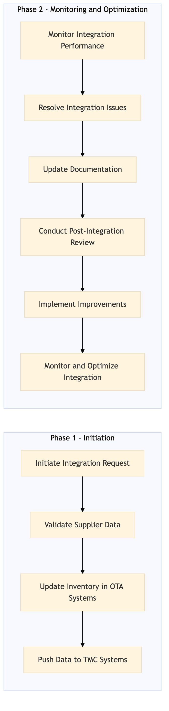

This process document outlines the integration of airport transfer and ground transport services between OTA systems and TMC systems for Expedia Group and Amex GBT / SAP Concur.
| Trigger | A booking request is made through an OTA system that includes a requirement for airport transfer or ground transport services. |
| Outcome | Successful integration ensures seamless booking, real-time availability updates, and accurate pricing for airport transfer and ground transport services across all systems. |
| Systems | Expedia Open World Partner Central Amadeus NDC Sabre GDS Travelport EVC One Key TravelAds AWS SageMaker Snowflake Kafka Salesforce Tableau SAP Concur T2 SAP Concur Expense Amex GBT Neo/Complete Amadeus GDS SAP S/4HANA International SOS Cvent Amex Corporate Card VCN SAP Analytics Cloud Workday |

Click to enlarge
| Step | Name & Pain Point | Role | System | Input | Output | KPI | Flags |
|---|---|---|---|---|---|---|---|
| 1.1 | Initiate Integration Request Handling unexpected booking requests | Integration Specialist | Expedia Open World, Partner Central, Amadeus NDC, Sabre GDS, Travelport, EVC, One Key, TravelAds, AWS SageMaker, Snowflake, Kafka, Salesforce, Tableau | Booking request with airport transfer or ground transport services | Integration request logged in system | Time to log integration request < 1 hour | ⚠ Exception |
| 1.2 | Validate Supplier Data Inconsistent supplier data formats | Data Validator | Expedia Open World, Partner Central, Amadeus NDC, Sabre GDS, Travelport, EVC, One Key, TravelAds, AWS SageMaker, Snowflake, Kafka, Salesforce, Tableau | Supplier data for airport transfer and ground transport services | Validated supplier data | Data validation accuracy > 95% | ◆ Decision |
| 1.3 | Update Inventory in OTA Systems Real-time inventory updates | Inventory Manager | Expedia Open World, Partner Central, Amadeus NDC, Sabre GDS, Travelport, EVC, One Key, TravelAds, AWS SageMaker, Snowflake, Kafka, Salesforce, Tableau | Validated supplier data | Updated inventory in OTA systems | Inventory update accuracy > 98% | ⚠ Exception |
| 1.4 | Push Data to TMC Systems Data synchronization issues | Data Pusher | SAP Concur T2, SAP Concur Expense, Amex GBT Neo/Complete, Amadeus GDS, SAP S/4HANA, International SOS, Cvent, Amex Corporate Card, VCN, SAP Analytics Cloud, Workday | Updated inventory data | Data pushed to TMC systems | Data push success rate > 99% | ⚠ Exception |
| 1.5 | Monitor Integration Performance High integration latency | Integration Monitor | AWS SageMaker, Snowflake, Kafka, Salesforce, Tableau | Integration logs and performance metrics | Performance report | Integration latency < 5 seconds | ◆ Decision |
| 1.6 | Resolve Integration Issues Complex integration issues | Support Engineer | All systems involved in the integration | Performance report and issue logs | Resolved issues | Issue resolution time < 2 hours | ⚠ Exception |
| 1.7 | Update Documentation Outdated documentation | Documentation Specialist | Confluence, SharePoint | Integration changes and improvements | Updated documentation | Documentation accuracy > 95% | ⚠ Exception |
| 1.8 | Conduct Post-Integration Review Low user satisfaction | Project Manager | All systems involved in the integration | Integration performance and user feedback | Post-integration review report | User satisfaction > 85% | ◆ Decision |
| 1.9 | Implement Improvements Resource constraints for improvement | Improvement Team | All systems involved in the integration | Post-integration review report | Implemented improvements | Improvement implementation rate > 80% | ⚠ Exception |
| 1.10 | Monitor and Optimize Integration Dynamic changes in system requirements | Continuous Improvement Team | AWS SageMaker, Snowflake, Kafka, Salesforce, Tableau | Integration performance metrics | Optimized integration processes | Optimization success rate > 75% | ◆ Decision |